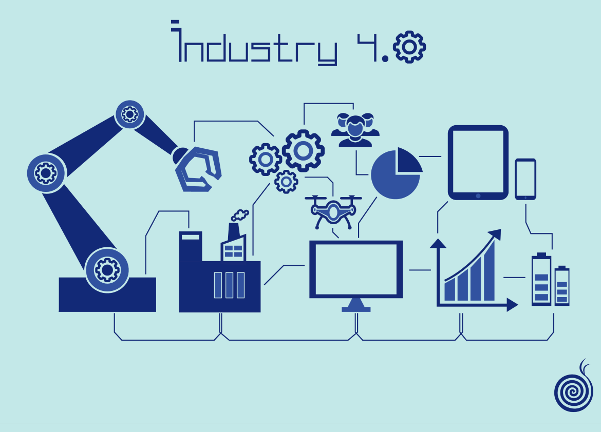
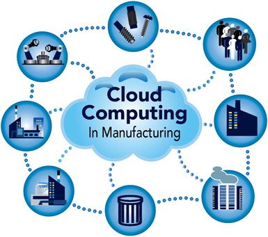
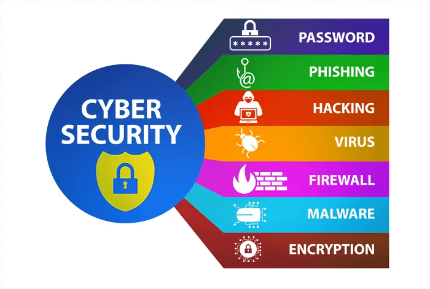

L'Obiettivo 9 e la Digitalizzazione Sostenibile
L’Obiettivo 9 dell’Agenda 2030 mira a costruire infrastrutture solide, promuovere un’industrializzazione sostenibile e favorire l’innovazione tecnologica. Lo sviluppo delle tecnologie digitali permette alle aziende di crescere in modo moderno ed efficiente, ma pone nuove sfide per la sicurezza dei dati.
Oggi l’innovazione e la sicurezza informatica sono collegate: senza reti sicure, le imprese rischiano attacchi informatici, furti di proprietà intellettuale e blocchi improvvisi della produzione. La resilienza delle infrastrutture digitali è quindi il cuore dell'industria moderna.

Industria 4.0 e Resilienza delle Reti
Nell’industria 4.0, i macchinari sono interconnessi tramite l'Internet delle Cose (IoT). Sebbene questo aumenti la velocità di produzione, ogni dispositivo connesso rappresenta un potenziale punto di vulnerabilità. Proteggere queste reti significa garantire la continuità del lavoro e la sicurezza degli operai.
La virtualizzazione industriale e i "Digital Twin" permettono di simulare processi produttivi in ambienti digitali sicuri, riducendo i costi e testando soluzioni senza rischi per l'impianto reale.
Innovazioni: Cloud e 5G Industriale
Il Cloud Computing offre alle piccole e medie imprese l'accesso a potenze di calcolo avanzate senza investimenti enormi in hardware. Parallelamente, l’introduzione del 5G industriale permette comunicazioni ultra-veloci e stabili tra i robot e i sistemi di controllo, a patto che vengano rispettati i protocolli di sicurezza europei come l’European Cybersecurity Act.

Soluzioni per un'Infrastruttura Sicura
Per sostenere l'innovazione in modo sicuro, ecco le tecnologie chiave suggerite per le imprese moderne:
| Tecnologia | Vantaggio per l'Impresa |
|---|---|
| Digital Twin | Simulazione sicura della produzione per prevenire guasti e testare innovazioni. |
| VPN Industriali | Accesso remoto protetto per la manutenzione dei macchinari da parte dei tecnici. |
| Certificazione UE | Adesione agli standard di sicurezza per proteggere le infrastrutture critiche. |
| Segmentazione Reti | Isolamento dei sistemi di produzione dagli uffici per contenere eventuali virus. |
Cittadinanza Digitale in Azienda
La tecnologia da sola non basta: la formazione del personale è fondamentale. La maggior parte degli incidenti informatici deriva da errori umani. Promuovere la cultura della sicurezza digitale tra i dipendenti è il primo passo per costruire un'impresa davvero innovativa e resiliente.
